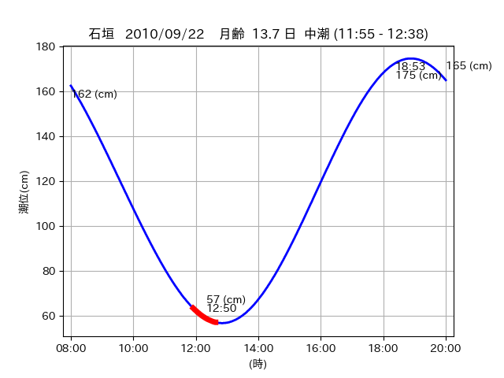

<!DOCTYPE html>
<html>
<head>
    
    <meta http-equiv="content-type" content="text/html; charset=UTF-8" />
    
        <script>
            L_NO_TOUCH = false;
            L_DISABLE_3D = false;
        </script>
    
    <style>html, body {width: 100%;height: 100%;margin: 0;padding: 0;}</style>
    <style>#map {position:absolute;top:0;bottom:0;right:0;left:0;}</style>
    <script src="https://cdn.jsdelivr.net/npm/leaflet@1.9.3/dist/leaflet.js"></script>
    <script src="https://code.jquery.com/jquery-3.7.1.min.js"></script>
    <script src="https://cdn.jsdelivr.net/npm/bootstrap@5.2.2/dist/js/bootstrap.bundle.min.js"></script>
    <script src="https://cdnjs.cloudflare.com/ajax/libs/Leaflet.awesome-markers/2.0.2/leaflet.awesome-markers.js"></script>
    <link rel="stylesheet" href="https://cdn.jsdelivr.net/npm/leaflet@1.9.3/dist/leaflet.css"/>
    <link rel="stylesheet" href="https://cdn.jsdelivr.net/npm/bootstrap@5.2.2/dist/css/bootstrap.min.css"/>
    <link rel="stylesheet" href="https://netdna.bootstrapcdn.com/bootstrap/3.0.0/css/bootstrap-glyphicons.css"/>
    <link rel="stylesheet" href="https://cdn.jsdelivr.net/npm/@fortawesome/fontawesome-free@6.2.0/css/all.min.css"/>
    <link rel="stylesheet" href="https://cdnjs.cloudflare.com/ajax/libs/Leaflet.awesome-markers/2.0.2/leaflet.awesome-markers.css"/>
    <link rel="stylesheet" href="https://cdn.jsdelivr.net/gh/python-visualization/folium/folium/templates/leaflet.awesome.rotate.min.css"/>
    
            <meta name="viewport" content="width=device-width,
                initial-scale=1.0, maximum-scale=1.0, user-scalable=no" />
            <style>
                #map_93e3a6b8205304d79185dfc91606dfb7 {
                    position: relative;
                    width: 2048.0px;
                    height: 1600.0px;
                    left: 0.0%;
                    top: 0.0%;
                }
                .leaflet-container { font-size: 1rem; }
            </style>
        
</head>
<body>
    
    
            <div class="folium-map" id="map_93e3a6b8205304d79185dfc91606dfb7" ></div>
        
</body>
<script>
    
    
            var map_93e3a6b8205304d79185dfc91606dfb7 = L.map(
                "map_93e3a6b8205304d79185dfc91606dfb7",
                {
                    center: [24.074, 123.787],
                    crs: L.CRS.EPSG3857,
                    ...{
  "zoom": 12,
  "zoomControl": true,
  "preferCanvas": false,
}

                }
            );

            

        
    
            var tile_layer_ebe2fc38d3467e9cfcfcfa8219468b48 = L.tileLayer(
                "https://cyberjapandata.gsi.go.jp/xyz/seamlessphoto/{z}/{x}/{y}.jpg",
                {
  "minZoom": 0,
  "maxZoom": 18,
  "maxNativeZoom": 18,
  "noWrap": false,
  "attribution": "\u5730\u7406\u9662\u5730\u56f3",
  "subdomains": "abc",
  "detectRetina": false,
  "tms": false,
  "opacity": 1,
}

            );
        
    
            tile_layer_ebe2fc38d3467e9cfcfcfa8219468b48.addTo(map_93e3a6b8205304d79185dfc91606dfb7);
        
    
            var marker_74df79964681eeeeeaee1c8589f24059 = L.marker(
                [24.073, 123.7546],
                {
}
            ).addTo(map_93e3a6b8205304d79185dfc91606dfb7);
        
    
            var icon_1f1c2cb34095c276d8660ddfafbdaf20 = L.AwesomeMarkers.icon(
                {
  "markerColor": "blue",
  "iconColor": "white",
  "icon": "info-sign",
  "prefix": "glyphicon",
  "extraClasses": "fa-rotate-0",
}
            );
        
    
        var popup_3abee02539fa1f3963267a588f986513 = L.popup({
  "maxWidth": "100%",
});

        
            
                var html_057ac95fa3ed76598c8aee8a31427377 = $(`<div id="html_057ac95fa3ed76598c8aee8a31427377" style="width: 100.0%; height: 100.0%;"><table><tr><td></td></tr><tr><td><center>20100922 No.1 </center></table></td></tr></table</div>`)[0];
                popup_3abee02539fa1f3963267a588f986513.setContent(html_057ac95fa3ed76598c8aee8a31427377);
            
        

        marker_74df79964681eeeeeaee1c8589f24059.bindPopup(popup_3abee02539fa1f3963267a588f986513)
        ;

        
    
    
                marker_74df79964681eeeeeaee1c8589f24059.setIcon(icon_1f1c2cb34095c276d8660ddfafbdaf20);
            
    
            var marker_f5b42c13ff1cc9389a9488d20244cc25 = L.marker(
                [24.0472, 123.7468],
                {
}
            ).addTo(map_93e3a6b8205304d79185dfc91606dfb7);
        
    
            var icon_b98f8344d0d6b60d5a4226cf4a5eba0c = L.AwesomeMarkers.icon(
                {
  "markerColor": "orange",
  "iconColor": "white",
  "icon": "info-sign",
  "prefix": "glyphicon",
  "extraClasses": "fa-rotate-0",
}
            );
        
    
        var popup_b4ec9bad191c7363efa068c34139a1be = L.popup({
  "maxWidth": "100%",
});

        
            
                var html_1f47d80c7214382e0500e501796eeed1 = $(`<div id="html_1f47d80c7214382e0500e501796eeed1" style="width: 100.0%; height: 100.0%;"><table><tr><td></td></tr><tr><td><center>20100922 No.2 </center></table></td></tr></table</div>`)[0];
                popup_b4ec9bad191c7363efa068c34139a1be.setContent(html_1f47d80c7214382e0500e501796eeed1);
            
        

        marker_f5b42c13ff1cc9389a9488d20244cc25.bindPopup(popup_b4ec9bad191c7363efa068c34139a1be)
        ;

        
    
    
                marker_f5b42c13ff1cc9389a9488d20244cc25.setIcon(icon_b98f8344d0d6b60d5a4226cf4a5eba0c);
            
    
            var poly_line_e1849bff1c60afec469f35ee1f37bcdd = L.polyline(
                [[24.0472, 123.7468], [24.049, 123.7428]],
                {"bubblingMouseEvents": true, "color": "#FF00FF", "dashArray": null, "dashOffset": null, "fill": false, "fillColor": "#FF00FF", "fillOpacity": 0.2, "fillRule": "evenodd", "lineCap": "round", "lineJoin": "round", "noClip": false, "opacity": 1.0, "smoothFactor": 1.0, "stroke": true, "weight": 3}
            ).addTo(map_93e3a6b8205304d79185dfc91606dfb7);
        
    
            var marker_8bb2defc01852f4bff25bbc5548472f7 = L.marker(
                [24.0743, 123.7834],
                {
}
            ).addTo(map_93e3a6b8205304d79185dfc91606dfb7);
        
    
            var icon_54a9e4c2dfd12c13ee7cde918767a4b2 = L.AwesomeMarkers.icon(
                {
  "markerColor": "orange",
  "iconColor": "white",
  "icon": "info-sign",
  "prefix": "glyphicon",
  "extraClasses": "fa-rotate-0",
}
            );
        
    
        var popup_18c8c7e4e2059975aa17cc0caa5766dd = L.popup({
  "maxWidth": "100%",
});

        
            
                var html_224e23ad88319989a39979d4e60910ef = $(`<div id="html_224e23ad88319989a39979d4e60910ef" style="width: 100.0%; height: 100.0%;"><table><tr><td></td></tr><tr><td><center>20100922 No.3 </center></table></td></tr></table</div>`)[0];
                popup_18c8c7e4e2059975aa17cc0caa5766dd.setContent(html_224e23ad88319989a39979d4e60910ef);
            
        

        marker_8bb2defc01852f4bff25bbc5548472f7.bindPopup(popup_18c8c7e4e2059975aa17cc0caa5766dd)
        ;

        
    
    
                marker_8bb2defc01852f4bff25bbc5548472f7.setIcon(icon_54a9e4c2dfd12c13ee7cde918767a4b2);
            
    
            var poly_line_cc78694fcfe910a72df875e1d4063394 = L.polyline(
                [[24.0743, 123.7834], [24.073, 123.7912]],
                {"bubblingMouseEvents": true, "color": "#00FFFF", "dashArray": null, "dashOffset": null, "fill": false, "fillColor": "#00FFFF", "fillOpacity": 0.2, "fillRule": "evenodd", "lineCap": "round", "lineJoin": "round", "noClip": false, "opacity": 1.0, "smoothFactor": 1.0, "stroke": true, "weight": 3}
            ).addTo(map_93e3a6b8205304d79185dfc91606dfb7);
        
</script>
</html>